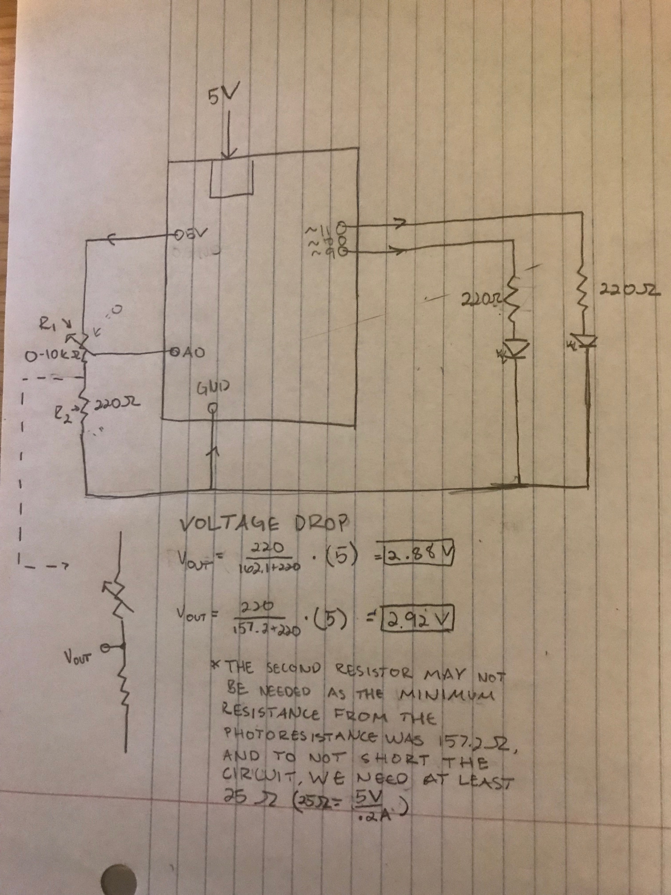
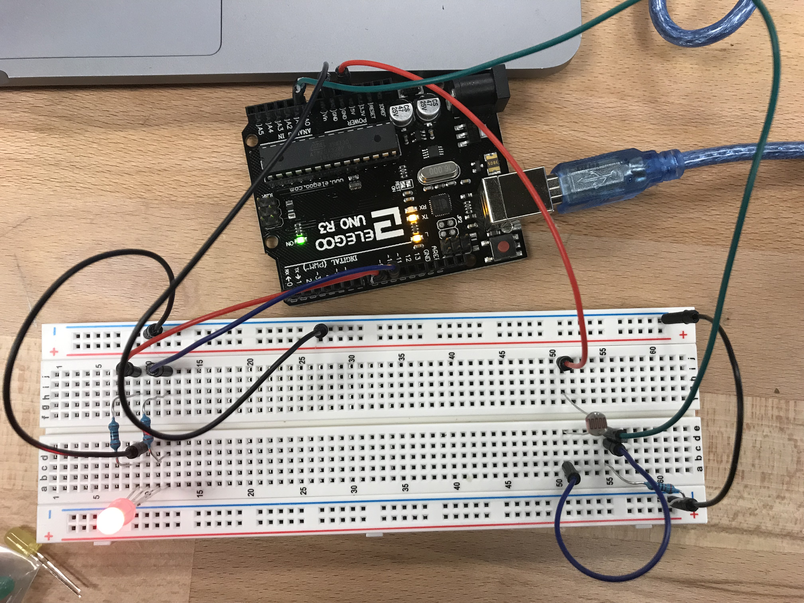

Ben's Assignment 3: Input Output
Schematic with Calculations

I used the 5V pin and the A0 pin to sense the photoresistor value. The A0 pin acts as a testing node to sense the amount of resistance that is being provided. I used 220 ohms of resistence for the button in order to limit the current flowing into the ground in the event that the photoresistor provides nearly 0 ohms of resistance. However, after testing the resistance of the photoresistor with my multimeter, the minimum resistance it was providing in the room and when my finger was covering it was 157 ohms, and this would be plenty of resistance to avoid a short. The voltage out after the photoresistor will almost always be between 2.88 volts and 2.92 volts.
For the LED, I connected the red portion of it to the 9 pin, and the blue portion of it to the 10 pin. I used 220 ohms of resistance for each one, as this is what I have calculated to be effective in previous homework assignments.
Circuit

Here is a picture of my circuit. I am using the 5V from the usb port from my laptop, and it should exactly align with my schematic.
Code Snippet
const int analogInPin = A0; // Analog input pin that the potentiometer is attached to
const int R = 9; //Red LED
const int B = 10; // Blue LED
int sensorValue = 0; // value read from the pot
int outputValue = 0; // value output to the PWM (analog out)
void setup() {
// initialize serial communications at 9600 bps:
Serial.begin(9600);
}
void loop() {
sensorValue = analogRead(analogInPin); // read the analog in value
outputValue = 255 - map(sensorValue, 60, 200, 0, 255); // map it to the range of the analog out
Serial.print("sensor = "); //prints sensor
Serial.print(sensorValue); //prints the sensor value
Serial.print("\t color = "); //prints color
if (sensorValue > 100) { //if the sensorValue is greater than 100, then do the following
Serial.println("red"); //print that the color should be red
analogWrite(B, 0); //turn off the blue light
analogWrite(R, outputValue); //turn on the red light at the level of outputValue
} else {
Serial.println("blue"); //print that the color should be blue
analogWrite(R, 0); // turn off the red light
analogWrite(B, outputValue); //turn on the blue light at the level of outputValue
}
delay(2); // wait 2 milliseconds before the next loop
}
Here it is in Action!

When you cover the photoresistor, there is less light hitting it, and the LED turns blue. When you uncover the photoresistor, the light turns red. It flickers as the analog output value is correlated to how much resistance the photoresistor is providing.